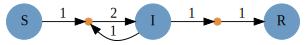
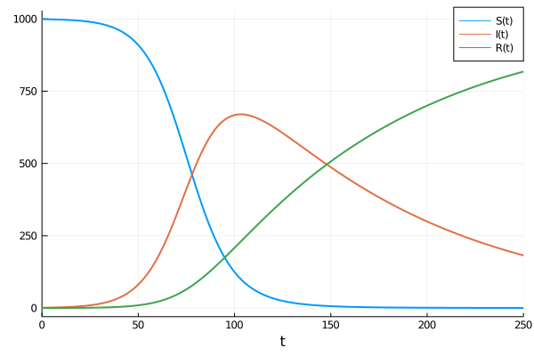

Catalyst.jl for Reaction Network Modeling
Catalyst.jl is a symbolic modeling package for analysis and high performance simulation of chemical reaction networks. Catalyst defines symbolic ReactionSystems, which can be created programmatically or easily specified using Catalyst's domain specific language (DSL). Leveraging ModelingToolkit and Symbolics.jl, Catalyst enables large-scale simulations through auto-vectorization and parallelism. Symbolic ReactionSystems can be used to generate ModelingToolkit-based models, allowing the easy simulation and parameter estimation of mass action ODE models, Chemical Langevin SDE models, stochastic chemical kinetics jump process models, and more. Generated models can be used with solvers throughout the broader SciML ecosystem, including higher level SciML packages (e.g. for sensitivity analysis, parameter estimation, machine learning applications, etc).
Features
- DSL provides a simple and readable format for manually specifying chemical reactions.
- Catalyst
ReactionSystems provide a symbolic representation of reaction networks, built on ModelingToolkit.jl and Symbolics.jl. - Non-integer (e.g.
Float64) stoichiometric coefficients are supported for generating ODE models, and symbolic expressions for stoichiometric coefficients are supported for all system types. - The Catalyst.jl API provides functionality for extending networks, building networks programmatically, network analysis, and for composing multiple networks together.
ReactionSystems generated by the DSL can be converted to a variety ofModelingToolkit.AbstractSystems, including symbolic ODE, SDE and jump process representations.- Conservation laws can be detected and applied to reduce system sizes, and generate non-singular Jacobians, during conversion to ODEs, SDEs, and steady-state equations.
- By leveraging ModelingToolkit, users have a variety of options for generating optimized system representations to use in solvers. These include construction of dense or sparse Jacobians, multithreading or parallelization of generated derivative functions, automatic classification of reactions into optimized jump types for Gillespie type simulations, automatic construction of dependency graphs for jump systems, and more.
- Generated systems can be solved using any DifferentialEquations.jl ODE/SDE/jump solver, and can be used within
EnsembleProblems for carrying out parallelized parameter sweeps and statistical sampling. Plot recipes are available for visualizing the solutions. - Julia
Exprs can be obtained for all rate laws and functions determining the deterministic and stochastic terms within resulting ODE, SDE or jump models. - Latexify can be used to generate LaTeX expressions corresponding to generated mathematical models or the underlying set of reactions.
- Graphviz can be used to generate and visualize reaction network graphs. (Reusing the Graphviz interface created in Catlab.jl.)
Packages Supporting Catalyst
- Catalyst
ReactionSystems can be imported from SBML files via SBMLToolkit.jl, and from BioNetGen .net files and various stoichiometric matrix network representations using ReactionNetworkImporters.jl. - MomentClosure.jl allows generation of symbolic ModelingToolkit
ODESystems, representing moment closure approximations to moments of the Chemical Master Equation, from reaction networks defined in Catalyst. - FiniteStateProjection.jl allows the construction and numerical solution of Chemical Master Equation models from reaction networks defined in Catalyst.
- DelaySSAToolkit.jl can augment Catalyst reaction network models with delays, and can simulate the resulting stochastic chemical kinetics with delays models.
Installation
Catalyst can be installed through the Julia package manager:
]add Catalyst
using CatalystIllustrative Example
Here is a simple example of generating, visualizing and solving an SIR ODE model. We first define the SIR reaction model using Catalyst
using Catalyst
rn = @reaction_network begin
α, S + I --> 2I
β, I --> R
end α βAssuming Graphviz and is installed and command line accessible, the network can be visualized using the Graph command
Graph(rn)which in Jupyter notebooks will give the figure

To generate and solve a mass action ODE version of the model we use
using OrdinaryDiffEq
p = [:α => .1/1000, :β => .01]
tspan = (0.0,250.0)
u0 = [:S => 999.0, :I => 1.0, :R => 0.0]
op = ODEProblem(rn, u0, tspan, p)
sol = solve(op, Tsit5()) # use Tsit5 ODE solverwhich we can plot as
using Plots
plot(sol, lw=2)
Getting Help
Catalyst developers are active on the Julia Discourse, and the Julia Slack channels #sciml-bridged and #sciml-sysbio. For bugs or feature requests open an issue.
Supporting and Citing Catalyst.jl
The software in this ecosystem was developed as part of academic research. If you would like to help support it, please star the repository as such metrics may help us secure funding in the future. If you use Catalyst as part of your research, teaching, or other activities, we would be grateful if you could cite our work:
@article {2022Catalyst,
author = {Loman, T. and Ma, Y. and Ilin, V. and Gowda, S. and Korsbo, N. and Yewale, N. and Rackauckas, C. V. and Isaacson, S. A.},
title = {Catalyst: Fast Biochemical Modeling with Julia},
elocation-id = {2022.07.30.502135},
year = {2022},
doi = {10.1101/2022.07.30.502135},
publisher = {Cold Spring Harbor Laboratory},
URL = {https://www.biorxiv.org/content/early/2022/08/02/2022.07.30.502135},
eprint = {https://www.biorxiv.org/content/early/2022/08/02/2022.07.30.502135.full.pdf},
journal = {bioRxiv}
}